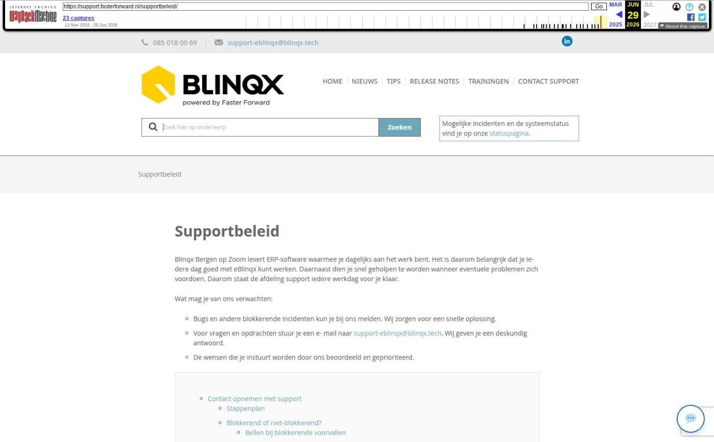

Supportbeleid

Tekstinhoud
Supportbeleid
Blinqx Bergen op Zoom levert ERP-software waarmee je dagelijks aan het werk bent. Het is daarom belangrijk dat je iedere dag goed met eBlinqx kunt werken. Daarnaast dien je snel geholpen te worden wanneer eventuele problemen zich voordoen. Daarom staat de afdeling support iedere werkdag voor je klaar.
Wat mag je van ons verwachten:
Bugs en andere blokkerende incidenten kun je bij ons melden. Wij zorgen voor een snelle oplossing.
Voor vragen en opdrachten stuur je een e- mail naar support-eblinqx@blinqx.tech. Wij geven je een deskundig antwoord.
De wensen die je instuurt worden door ons beoordeeld en geprioriteerd.
Contact opnemen met support
Stappenplan
Blokkerend of niet-blokkerend?
Bellen bij blokkerende voorvallen
Mailen bij niet-blokkerende voorvallen
Informeer ons volledig
Proces van vragen
Eerste lijn support
Tweede lijn support
Licentievragen en klachten
Bugs
Wensen
Contact opnemen met support
Om deze verwachtingen waar te maken hebben wij ook je medewerking nodig. Lees daarom onderstaande procedure aandachtig door.
Tijdens het werken met eBlinqx kun je tegen vragen of problemen aanlopen die op dat moment urgent zijn. Om de stroom van contactmomenten in goede banen te leiden en je snel te helpen, is het belangrijk dat de procedure duidelijk is. Hieronder is deze procedure uitgeschreven.
Stappenplan
Onderstaand stappenplan geeft aan wanneer en hoe je contact kunt opnemen met onze support afdeling.
Voordat je contact met ons opneemt raadpleeg je eerst de supportwebsite.
Indien je hier je antwoord niet kunt vinden, neem je contact op met de supportafdeling. De manier waarop je contact opneemt, hangt af van of het een blokkerend of een niet-blokkerend probleem is.
Blokkerend of niet-blokkerend?
Per probleemsituatie maken wij onderscheid in twee soorten voorvallen: blokkerend of niet-blokkerend. Dit onderscheid hangt nauw samen met de met de manier waarop je ons benadert en welke prioriteit het probleem krijgt.
Bellen bij blokkerende voorvallen
Ben je verhinderd in het uitvoeren van je werkzaamheden door een blokkerend probleem? Of is het probleem van dusdanig belang dat er direct actie wordt ondernomen? Neem dan telefonisch contact op met de afdeling support via 085 018 00 69.
Voorbeelden
eBlinqx functioneert niet meer
Je kan niet meer inloggen
Je krijgt een foutmelding waardoor je niet verder kan met je werk
Let op: Blokkerende incidenten kunnen niet altijd direct worden opgelost. Hiervoor wordt daarom vaak een ticket aangemaakt. Een medewerker van de supportafdeling doet dit voor je en houdt je op de hoogte.
Mailen bij niet-blokkerende voorvallen
Loop je tegen een probleem aan met eBlinqx, maar kan je je werkzaamheden nog wel gewoon uitvoeren? Omschrijf het incident dan zo nauwkeurig mogelijk en stuur een e-mail naar support-eblinqx@blinqx.tech
Voorbeelden
Je kan een offerte niet verwijderen
Je hebt een vraag over het koppelen van een e-mail
Informeer ons volledig
Heb je een vraag over de werking van eBlinqx of je komt ergens niet helemaal uit? Mail dan je vraag zo duidelijk en uitgebreid mogelijk.
Belangrijke informatie die je moet toevoegen aan je e-mail:
Screenshot of printscreen van het scherm toen het voorval optrad
URL van de pagina op het moment dat het voorval optrad (deze vind je bovenaan in de browser en begint altijd met https://….)
Duidelijke omschrijving van de stappen die je ondernam voordat het probleem ontstond.
Vermeld je browser en versienummer van de browser
Wanneer je ticket voldoende informatie bevat, gaan we er gelijk mee aan de slag.
Proces van vragen
Je vraag komt standaard binnen bij de supportafdeling. Dit noemen we de ‘eerste lijn’. Hier wordt je vraag beoordeeld. Afhankelijk van de aard van de vraag, wordt deze direct opgelost door een supportmedewerker of doorgezet naar een programmeur (tweede lijn). De programmeur kijkt dan gedetailleerd naar de vraag die je hebt ingestuurd.
Het kan voorkomen dat we een vraag omzetten naar een opdracht. Dit kan zijn wanneer we het probleem verder moeten uitzoeken of er een wijziging nodig is op de huidige inrichting van je eBlinqxomgeving.
Bekijk hiervoor ons opdrachtenbeleid.
Eerste lijn support
Wanneer de vraag behandeld kan worden in de eerste lijn van het proces, dan houdt dit in dat wij je zo snel mogelijk informeren over de oplossing van het voorval. Wanneer de eerste lijn niet direct antwoord kan geven wordt je vraag/probleem doorgezet naar de tweede lijn.
Tweede lijn support
Wanneer het voorval wordt behandeld in de tweede lijn kan het wat langer duren voordat wij een reactie sturen. De vraag is te complex om direct op te lossen of het probleem moet eerst uitgezocht worden door onze organisatie.
Uiteraard houden wij je op de hoogte van de ontwikkeling.
Licentievragen en klachten
Wanneer je een vraag hebt over eBlinqxlicenties en/of je contract, wordt deze in eerste instantie behandeld door onze supportafdeling. Ook klachten komen hier terecht. Afhankelijk van de melding overlegt de supportafdeling met de relatiemanager om dit verder te bespreken en het aan je terug te koppelen.
Bugs
Wanneer wij constateren dat de vraag een systeemfout betreft, wordt deze geclassificeerd als ‘bug’. Een bug moet opgelost worden.
Allereerst bepalen wij de impact van de bug en de gevolgen op het functioneren van eBlinqx. Afhankelijk hiervan bekijken wij of je probleem tijdelijk op te lossen is door je werkwijze met eBlinqx aan te passen.
Wanneer het probleem niet opgelost kan worden door een aanpassing van de werkwijze, dan wordt er een ‘hotfix’ uitgevoerd. Dit houdt in dat er direct een wijziging op het systeem doorgevoerd wordt waarmee de bug verholpen is.
Wensen
Mis je iets in eBlinqx waarvan je denkt dat het absoluut een toegevoegde waarde is voor alle klanten? Stuur dan je wens in naar support-eblinqx@blinqx.tech. Hoe wij deze wens vervolgens behandelen, lees je in ons wensenbeleid.